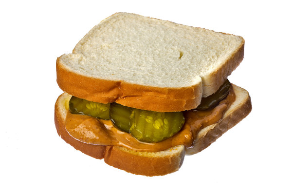

The GOAT Sandwich

This is the pinnacle of all sandwiches. A simple yet brilliant combination.
INGREDIENTS
- 2 slices of your favourite bread (get wholemeal and be healthy mate)
- Peanut butter (crunchy if you're daring)
- Cut up dill pickles (the more the merrier
INSTRUCTIONS
I mean...do you really need instructions??
Here it is incase this is your first sandwich rodeo:
- Spread peanut butter on both slices of your bread. (Toasting is optional)
- Place pickles in a pattern of your choice on one slice
- Cover with the other slice
- Salivate at the sheer beauty of your creation and take a monsterous bite